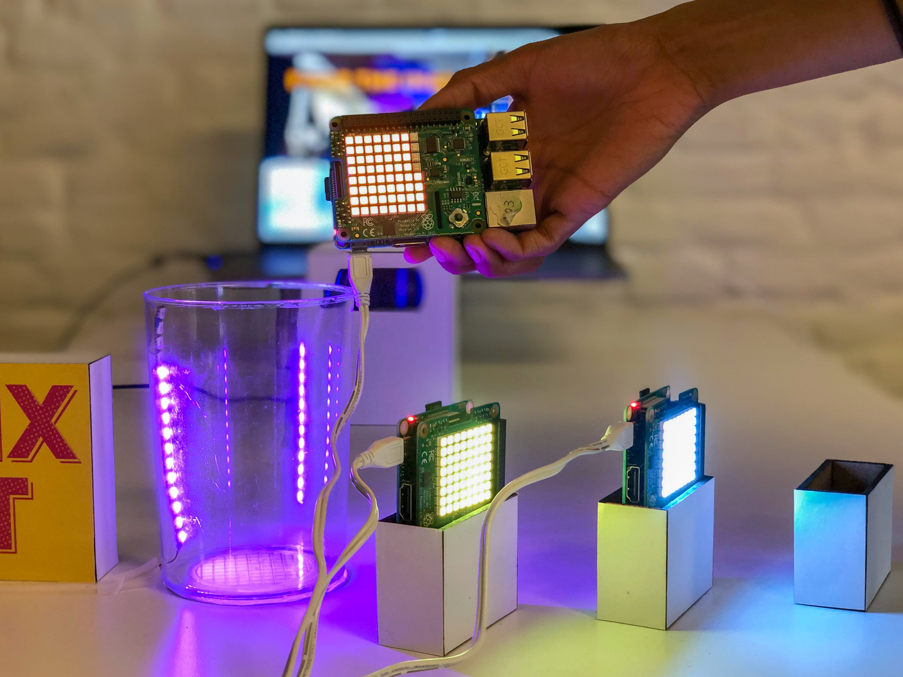

Immersive Bar
> find out more
Immersive Bar (2019)

The Theme
How might we create a joyful mixed reality experience which offers a recurring element of surprise?
What's Immersive Bar?
Immersive Bar is a cocktail mixing game, with which player can choose from three ingredients, and pours them into a cocktail shaker. A combination of physical LED strip and Unity digital output on the computer screen will visualize the liquid level. Once the shaker is full, the computer mixes the cocktail and drinks it. The original cocktail is then rated by the computer.
How does it work?
The three ingredients are represented by SenseHAT-equipped Raspberry Pi boards. While pouring the ingredients, the pouring angle is detected. When an ingredient is being poured, the Sense HAT’s accelerometer detects the angle, and he angle values are sent to Unity via Spacebrew, which acts as a connecting interface. An LED strip - controlled by a fourth Raspberry Pi - in the shaker visualizes the liquid level. Once the shaker is full, a laptop computer - running Unity - mixes the cocktail and 'drinks' it before giving a rating. The whole setup is recorded by a camera and displayed on a screen.
CloseWild Drawing Machine (2019)
The Problem
We live in an environment which is surrounded by hazardous risk factors. While sunlight is beautiful, overexposure to the sun’s ultraviolet (UV) radiation can damage collagen fibers, accelerate aging of the skin, and even cause skin cancer. We can not escape from this environment, and it is hard to notice the unsafe level of these factors due to its invisibility.
What's Wild Drawing Machine?
Wild Nothing is an entity made for increasing awareness of environmental factors by eating invisible environmental data such as UV, temperature, air quality, and representing it as street data visualization.
How does it work?
Wild Nothing 156 captures environmental data while autonomously crawling the city, expressing the current environmental status by visualizing it on the street, taking different amounts of ink of different colors to represent the gathered data of each factor. Each color represents each environmental factor:
- Red: UV
- Purple: Temperature
- White: Air Quality
The Technicalities
Wild Nothing 156 is controlled through an Arduino Uno. An ultrasonic sensor is used to detect the distance from an object. Using a servo motor, it constantly senses the distance over 180 degrees and avoids obstacles collaborating with DC motors & wheels to navigate the environment. Three peristaltic pumps are used to extract the colored ink from the ink pack and drop the ink on the street. The amount of ink is controlled by the levels of environmental data captured by the UV sensor, temperature sensor, and air quality sensor. Also, a fan is used to spread the ink after dropping it, to represent the data in a polar grid graph.
One of our challenges was to design the optimal form of the machine to compress those bunch of motors, sensors and ink bags to fit into one compact machine, so that it can move smoothly & autonomously obtaining the form from its own needs.
CloseThe Little K (2019)
The Theme
How might we make an electronic product with a positive glocal impact?
What's Little K?
The Little K is an extension to your home kettle, which notifies you of the amount of water you need while filling the water into the kettle. This prevents the overfilling of water, saving the energy to boil the unused water.
Background
97% of household in UK own kettle, and use it 7 times a day on average. On the other hand, 65% of UK tea drinkers admit to over-filling their kettles. One day of extra energy use from boiling kettles is enough to light all the street lights in UK for a night.
User research
We conducted qualitative interview with kettle users, then noticed the tendency to overfill mainly comes from the uncertain of:
-number of cups of water being served
-size/shapes of cup will be used
Also, all of interviewees agreed to pour the leftover water down the drain, after the certain period of time passed from the first boil.
How does it work?
Avoid over-filling of water by notifying with sound & lights when 1 cup / 2 cups / 3cups of water is filled. The Little K changes its colors / tones as the amount of water increase.
Facilitate re-use of the left water by notifying with user by lights. When the user bring up the kettle from the boiler parts, The Little K shows how many cups of water is still left in the kettle.
CloseAdaptive Protective shelter (2019)


The Problem
Due to the over population and heavy carbon footprint around world, drastic change in the global climate will occur in the near future.Most cities in coastal area will be covered by the risen sea water, forcing billions of people to relocate.
What's Adaptive Protective shelter?
Adaptive Protective shelter is designed for the people who will be forced to relocate to another location on foot, due to climate change in the coming future. It can be used by all kinds of migrants, be it individuals or families.
The core feature of the shelter:
- portable, lightweight tent so that it can be carried by migrants easily
- low maintenance, making it self-healing to some extent
- protects from hot and cold temperatures, and provides resilience against winds and other forces
- modular and can be expanded for families
Design Approach
Biomimicry is an innovation approach that seeks sustainable solutions to human challenges by emulating nature’s time-tested patterns and strategies.In order to use nature as a design mentor, we first clustered the relevant mentors and abstracted the biological strategies they used to protect themselves from the environment.
Here are the overview of the strategies we found from nature mentor:
- Some snails have houses made of multiple layers which make them resilient
- Several animals, from squirrels to lizards, have reflecting fur or scales to reflect sun light
- The pangolin is hard and flexible at once due to its scales
- Modular growth is quite common in nature
- Many insects have fascinating wings with lots of joints which prevent wear and tear
- a common self-healing mechanism in nature is filled by a liquid material from another layer
Milk Stirring Machine (2017)
What is Milk Stirring Machine?
Milk Stirring machine is to help you drink a coffee without manual stirring of milk or sugar.
How does it work?
This prototype uses Arduino with light sensor & DC motor. The motor starts circulating depending on the brightness around the sensor, which is embedded under the milk pod.
CloseLUPE (2019)
What is LUPE?
LUPE is an educational app designed to help children build their vocabulary and speaking skills. The app has two modes: the first introduces new words, and the second tests the child’s knowledge.
How does it work?
To start off, the user opens the app to take a picture of an object they want to identify. The app scans the object, recognizes it, then teaches the child its name. As they continue to use the app and scan more and more words, the user builds up a history they can easily return to for review.
Pulling from the scan history, the app generates a comprehension test that helps the user retain the vocabulary they’ve learned. The app is designed to pull from out physical world into the digital space.
CloseMechanical Lung (2019)
The problem
In our everyday life, we tend to breath bad quality air without noticing, partly because it is invisible.On the other hand, breathing bad air can destroy your health – it can cause shortness of breath, increase in fatigue, aggravate asthma and other respiratory conditions, and even affect your heart system. Air pollution can be extremely hard to detect, especially indoors. People can sit indoors for long hours and breathe bad air without knowing it.
What is Mechanical Lung?
Mechanical Lung is an entity made for creating awareness of air quality by reading the air and expressing it with the lung’s shape & color & smoke, in a silent and unobtrusive way. It is built for indoor environments, where it sits quietly and indicates the current quality of the air.
How does it work?
Mechanical Lung will tell you the current air quality level by changing its behavior according to the air quality level.
There are three levels of air quality:
- Level 1 – Breathing
- Air quality: Normal
- Meaning: You can breathe the air safely.
- Color: Blue
- Movement: Calm & stable breath
- Level 2 – Agitating
- Air quality: Dirty
- Meaning: It’s time to open the window and refresh the air
- Color: Purple
- Movement: Fast breathing, hyperventilation.
- Level 3 – Critical
- Air quality: Hazardous
- Meaning: The air quality is really bad. Go outside and take a break.
- Color: Red
- Movement: Dry & contracted. Smoke starts forming inside the lung.
Technicalities
Mechanical Lung 156 is controlled through an Arduino Uno. The circuit consists of two fans, one used for contracting and one for expanding. Both the fans are connected through transistors to higher voltage power sources so they can run optimally. There is also a relay connecting a hacked e-cigarette. The smoke component of the e-cigarette was taken out and controlled through the Arduino, which was used to turn it on or off through a relay. Moreover, there is an air quality sensor that detects the Carbon Dioxide parts per million in the air and responds accordingly. Finally, there is an RGB LED strip inside that lights up based on the condition of the air. All of these components were held together on a base and turned upside down to get the final outcome of a breathing, mechanical lung, as can be seen in the video.
CloseLife Discovery (2015)
The Challenge
“What do you want to do when you grow up?” Most people don’t have clear answer for this very popular question, and most people struggle to find any clues to find the answer.
What is Life Discovery?
The “Life Discovery” will help those younger people find their own future paths, by showing a real life story of a person who has similar personal traits or experience with them. Due to the similarity, it is easier to reflect that life story against his/her personal path, encouraging them to pursue the life they want. This prototype was created with 5 team members during a 2-day Hackathon with 180 participants, and this service won the 1st prize in the Hackathon.
Closephysical computing
UI/UX
Eye Tracking Matching
> find out more
> find out more
Life Centered Research (2019)
The Challenge
“How might we shift Copenhageners' behaviour towards better health and ‘glocal’ sustainability?”
We conducted in-depth interviews, synthesized findings from the interviews and desktop research, and created themes by clustering stories
The team chose to focus on two aspects of the foodscape:
- Within our sample size, the choice of ‘Organic’ or Øko products seemed largely influenced by social movements, but most people were skeptical or unsure of what the term really meant.
- Traditional Danish food is perceived to be unhealthy and boring by CPHers, whereas even non-Danish citizens of the city have absorbed Danish family values around cooking and eating together
Proposal
- Check Yourself : a system which piggybacks on Netto’s existing price checker to provide information about the food you purchase at the supermarket beyond just the ‘Øko’ label. The checker provides a need-to-know breakdown of the stickers that come with food (Fair Trade, Danish certified), as well as the cumulative impact the item’s growth and transportation has on the environment.
- New Nordic Community Garden : A community garden designed to serve to educate and promote New Nordic philosophy, which is centered around seasonality, sustainability, and the use of fresh, healthy, and local ingredients.
An important facet of both solutions was scalability – both were designed to start at the individual or community level, but adapt to national/global levels of growth, in keeping with UNDP Sustainability Goals.
CloseAnger Translator (2019)

The Challenge
“How might we translate negative emotion into positive productivity?”
What is Anger Translator?
Anger Translator is a Gmail plugin that transforms negative gestures into positives sentences that can be written in their work email. It utilizes machine learning technology to detect employee’s angry gestures and automatically offers some suggestions on input, hence stops any possible inputs that could potentially contain negative emotions.
How does it work?
The project was completed using ml5 to train three different gestures so that the machine could recognise each gesture and provide various corresponding text outputs for people to choose from.
Closemachine learning
Build Your City
> find out more
> find out more